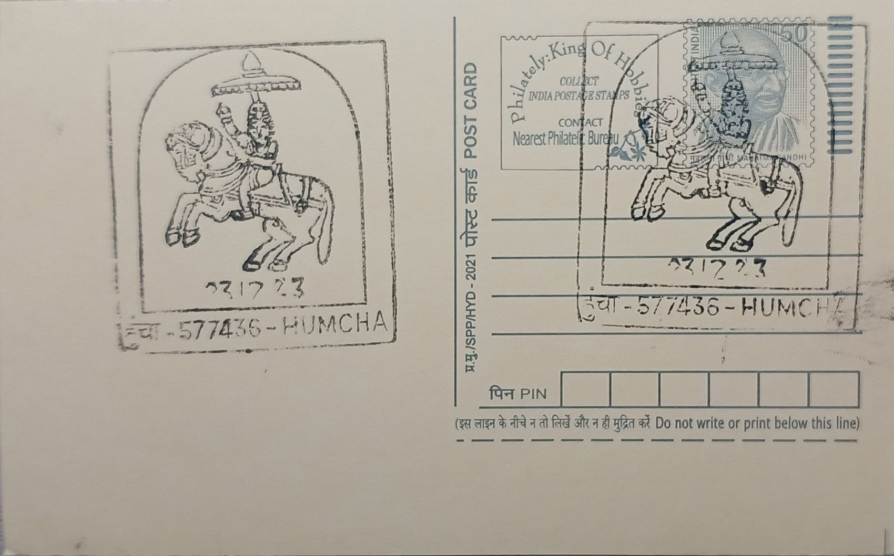

Sri Hombuja Jain Math
ಶ್ರೀ ಹೊಂಬುಜ ಜೈನ ಮಠ


The sacred status of Hombuja, also recorded historically as Humcha, is tied to a founding legend involving Jinadatta Raya, a Jain prince said to have migrated from Mathura in northern India. According to tradition, he carried with him an idol of the Jain goddess Padmavati and established his seat at this site, laying the foundation of the Santara dynasty that would rule the region for centuries with Humcha as its early capital. The name Hombuja is popularly connected to the Kannada words for gold and lotus, reflecting local lore about a golden lotus associated with the goddess, while the older name Humcha persists in historical records and continues to appear alongside Hombuja in references to the town and its matha.
Sri Hombuja Jain Math stands as one of the principal Bhattaraka seats of Digambara Jainism in Karnataka, historically classified among the centres termed Vidyasthana, or seats of learning, where scholarship, scriptural transmission, and temple administration were concentrated under a resident pontiff. The math is inseparable from the adjoining Padmavati temple, regarded by many Jain adherents as the most sacred site in India dedicated to the goddess Padmavati, consort and yakshi of the twenty-third Tirthankara, Parshvanatha. This dual identity, as both a monastic administrative institution and a major pilgrimage destination, places Hombuja alongside Shravanabelagola and Moodabidri among the handful of Jain centres that have shaped Digambara religious life in South India across more than a millennium.
Temple construction at the site is attributed chiefly to rulers of the Santara dynasty: Vikrama Santara is credited with building the Guddada Basadi dedicated to Bahubali in 897 CE and a Parshvanatha temple in 950 CE, while the present structure of the Padmavati temple is attributed to Vira Santara in 1061 CE. Successive Santara rulers and their successors expanded the temple complex over the following centuries, producing a cluster of basadis built in the Dravidian temple idiom typical of Karnataka's Jain architecture, with carved pillars, Tirthankara images, and shrine chambers added as royal patronage continued through the dynasty's later branches based at Karkala and Keravadi.
A distinguishing feature of Hombuja is the survival of an unbroken line of Bhattarakas administering the math since its early medieval founding, making it one of the few Digambara seats where the pontifical succession and its associated manuscript and ritual traditions have continued with comparatively little interruption into the present day. The math's Mahamastakabhisheka ceremonies and periodic festivals at the Padmavati shrine draw Jain pilgrims from across Karnataka and neighboring states, reinforcing Hombuja's standing as a living ritual centre rather than merely a preserved historical monument, in contrast to some other Jain sites in the region that function today primarily as archaeological attractions.
In its present-day work, the math operates through the Sri Hombuja Padmavathi Educational Trust, which runs schools including an English-medium primary school at Humcha and another at nearby Harige, alongside hostel facilities for students in Shivamogga and Sagara, extending the institution's historical role in scholarship into contemporary rural education and welfare. The math has also pursued affiliation with Kannada University, Hampi, for a planned study and research centre at Humcha focused on Jain studies and regional history. Administered today by its resident Bhattaraka alongside the educational trust, Sri Hombuja Jain Math thus continues to function as a working combination of pilgrimage site, monastic seat, and local educational provider within Shivamogga district's Malnad countryside.
| Date of Introduction | October 13, 2019 |
|---|---|
| Address | Sub Postmaster, |
| Humcha SO, | |
| Shivamogga (dt.), Karnataka - 577436. |